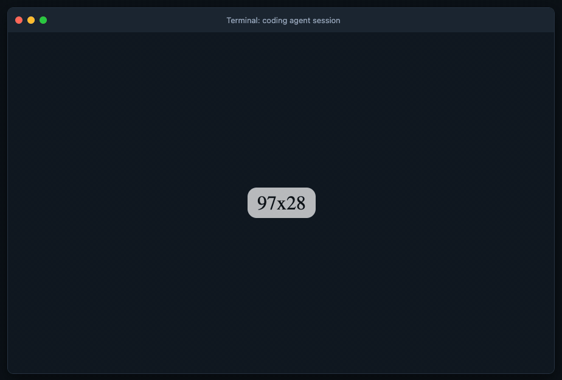

Kept out of the transcript
The secret goes from your browser to the command. It never passes through the model's context or the chat log.
Keyrelay prints a single use link. You open it, check the command, and type the key. It goes straight to that one command and never into the conversation.
npx keyrelay run --env DEMO_TOKEN -- printenv DEMO_TOKEN
keyrelay run --env NAME asks you for the secret, then -- your command runs with it as $NAME
Try it with a made up value. Needs Node.js 18+ and Python 3.9+.
One Python file, 444 lines, no dependencies Runs locally, no account
Bash(npx keyrelay run --env OPENAI_API_KEY -- node check-key.js)
Open http://127.0.0.1:•••••/r/••••••••
Waiting up to five minutes for the secret...
Open this link to enter the key. I'll report the script output when it finishes.
Read(task output)
OPENAI_API_KEY=[REDACTED]
Credential handoff
Review the command before supplying the secret. The request expires after five minutes.
Why Keyrelay
Your agent hits a command that wants a token, then tells you not to paste it. Pasting it into chat puts it in the transcript and the model's context. Typing it as an argument puts it in shell history and the process list. Keyrelay gives you somewhere else to type it.
The secret goes from your browser to the command. It never passes through the model's context or the chat log.
The key is never a command line argument. It arrives as an environment variable, or on standard input with --stdin.
Each link takes one submission. Unclaimed requests expire after five minutes, live in memory only, and aren't logged.
The local broker binds to 127.0.0.1 on a random port, accepts only its exact Host, and rejects cross origin POSTs.
How it works
01
Add one line to your agent instructions. When a command needs a credential, the agent runs it through Keyrelay and shows you the link.
02
The form shows the exact command first. Repeat --field for up to 16 values; the command gets them as one JSON object.
03
It gets the exit status and output. If the command echoes the secret, or any field value of 4 bytes or more, that text becomes [REDACTED].
See a real run
The recording from the README shows a full handoff with a coding agent. The tool behind it is one file you can read over a coffee.

Security, honestly
It keeps the key out of the conversation. It is not a sandbox. Use narrowly scoped, short lived credentials where you can, and report a way around it through private vulnerability reporting.
The command you approve receives the real secret. It can store it, send it anywhere, or print it in a form redaction misses, such as base64. Read the command on the form before you send.
They can read the runner's memory, and same user tools can read environment variables. If that matters, use --stdin.
A CLI that logs in may save a session or token to disk. That is up to the tool, not Keyrelay.
Python can't reliably wipe strings, so claimed requests are deleted, not scrubbed. In Tailscale mode, any device signed in as the allowed user can open a pending link.
FAQ
Node.js 18 or newer for npx, and Python 3.9 or newer. To install it permanently, run npm install -g keyrelay. Without Node.js, clone the repository and run python3 keyrelay.py with the same arguments.
--stdin instead of --env?--env NAME sets the secret as an environment variable, which same user tools such as ps -E or /proc/PID/environ can read. --stdin writes it, followed by a newline, to standard input instead. Use it for tools that read the secret from input, such as gh auth login --with-token.
Yes, with a persistent broker behind Tailscale Serve that is reachable only on your Tailnet. Pass it to the runner with --url. Never use Tailscale Funnel or a public reverse proxy. The secret still goes to the command on the machine running keyrelay run.
Sign ins that need a person at the page, such as 2FA, CAPTCHAs, passkeys, or SSO. Use your agent's own browser tool for those. Commands that need an interactive terminal aren't supported either.
read -s, a password manager CLI, or a .env file?read -s works when you type into the shell that runs the command, which an agent's tool calls usually aren't. A CLI like 1Password's op run fits if the secret is already in a vault and the agent may request it by name. A .env file sits in plain text where the agent can read it, so keep it for keys you'd let the agent see.
Press Ctrl+C in the terminal. Unclaimed requests also expire on their own after five minutes.
Run the quickstart with a made up value, enter demo-value on the form, and watch the command print it back as [REDACTED].
npx keyrelay run --env DEMO_TOKEN -- printenv DEMO_TOKEN
keyrelay run --env NAME asks you for the secret, then -- your command runs with it as $NAME
Try it with a made up value. Needs Node.js 18+ and Python 3.9+.
Free, MIT licensed No account Test with a fake value first